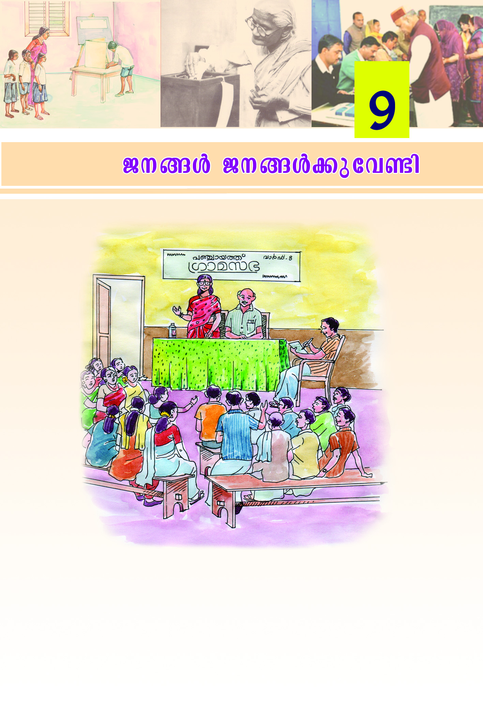
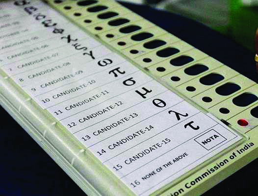
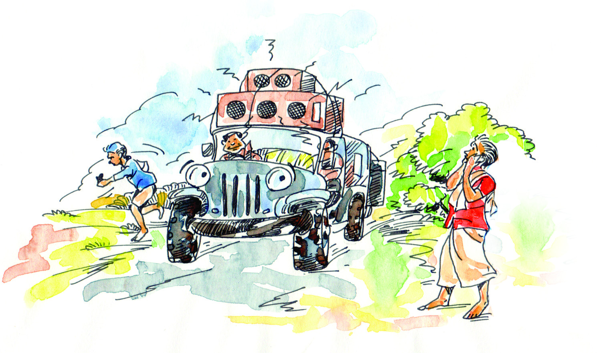

kmaq-ly-imkv{Xw V
108
108
108
\n߃ {Kma-k-`-sb-°p-dn®p tI´n-´pt≠m?
Hcp {Kma-k` IqSp∂ Nn{X-amWv apI-fn¬ sImSp-Øn-´p-≈-Xv.
\nß-fpsS \m´nepw {Kma-k` IqSm-dnt√? AXn¬ Bscm-s°-bmWv ]s¶-Sp-
°p-∂-sX∂pw Fs¥m-s°-bmWv AhnsS N¿® sNøp-∂-sX∂pw Is≠-
Øm≥ {ian-°q.
Page 28

Page 29

P\-߃ P\-߃°p-th≠n
109
109
109
hm¿UpX-e-Øn-ep≈ hnI-k\ {]h¿Ø-\-߃ Xocp-am-\n-°m-\p≈ thZn-
bmWv {Kma-k-`. \K-c-ß-fn¬ CXns\ "hm¿Uv k`' F∂p ]d-bp-∂p.
hm¿Unse F√m thm´¿am¿°pw {Kma-k-`-bn¬/hm¿Uv k`-bn¬ ]s¶-Sp-
°mw. N¿®-Ifn¬ ]s¶-SpØv A`n-{]mbw ]d-bm≥ Ah¿s°√mw Ah-k-c-
ap-≠v. hm¿Un¬ \S∏mt°≠ hnI-k-\-{]-h¿Ø-\-߃ kw_-‘n®v P\ß-
ƒ {Kma-k-`-bn¬ Iq´mbn N¿® sNbvXv Xocp-am-\-߃ FSp-°p-∂p. CØcw
{]h¿Ø-\-߃°v t\XrXzw sImSp-°p-∂Xv B hm¿Un¬ \n∂pw P\-
߃ Xncs™-Sp-°p∂ P\-{]-Xn-\n-[n-bm-Wv. Cu P\-{]-Xn-\n-[n {Kma-ß-
fn¬ hm¿Uv saº¿ F∂pw \K-c-ß-fn¬ Iu¨kn-e¿ F∂pw Adn-b-s∏-Sp-
∂p. CØ-c-Øn¬ {]Xn\n-[n-Isf Xnc-s™-Sp-°p∂ coXn a‰v Fhn-sS-sb√mw
\n߃°v ImWmw?
$
¢mkv/kvIqƒ eoU¿
$
kl-I-cWkwLw
$
¢∫v/hmb-\-ime
$
tªm°v ]©m-bØv
$
Pn√m ]©m-bØv
$
kwÿm\ \nb-a-k`
$
]m¿e-sa‚ v
$
{Kma-k-`-bn¬ P\-߃°v t\cn´v ]¶m-fn-I-fm-Im\pw Xocp-am-\-ß-sf-Sp-°p-
hm\pw Ign-bp-∂p. F∂m¬ kwÿm-\-X-e-Ønepw tZio-b-X-e-Ønepw Iq´mb
Xocp-am-\-ß-sf-Sp-°p-∂Xv P\-߃ Xncs™SpØ {]Xn-\n-[n-I-fmWv.
P\m-[n-]-Xy-`-cWw P\-ß-fpsS B{K-l-߃°v
A\p-kr-X-am-bn-cn-°-Ww.
˛ alm-flm Km‘n
P\-߃°pth≠n
P\-ß-fm¬ \S-Øp∂ P\-ß-fpsS `cWamWv P\m-[n-]Xyw
˛ F{_lmw en¶¨
Page 30


kmaq-ly-imkv{Xw V
110
110
110
P\m-[n-]Xyhpw Xnc-s™-Sp∏pw
{]mtZ-inIXew apX¬ ]m¿e-sa‚phsc Xßsf `cn-t°≠ {]Xn-\n-[n-Isf
Xnc-s™-Sp-°p-∂Xv P\-ß-fm-Wv. km¿Δ-{XnI {]mb-]q¿Øn thm´m-h-Im-i-
Øns‚ ASn-ÿm-\-Øn-emWv Xnc-s™-Sp∏v \S-Øp-∂-Xv. 18 hbkv ]q¿Øn-
bmb F√m C¥y≥ ]uc≥am¿°pw thm´-h-Imiw D≠v. Cßs\ {]mtZ-in-
I-`-c-W-Iq-S-ßfnte°pw \nb-a-k`Ifnte°pw temIvk-`-bn-te-°p-ap≈ {]Xn-
\n-[n-Isf P\-߃ thm´p sNbvXmWv Xnc-s™-Sp-°p-∂-Xv. Xnc-s™-Sp∏v
P\m-[n-]-Xy-Øns‚ ASn-ÿm\ khn-ti-j-X-I-fn-sem-∂m-Wv.
P\m-[n-]-Xy-Øns‚ Nne khn-
ti-j-X-Ifpw P\m-[n-]-Xy-sØ-
°p-dn-®p≈ alm-∑m-cpsS A`n-{]m-
b-ßfpw hmbn-®t√m. F¥mWv
P\m-[n-]-Xyw F∂v t\m°mw.
P\-߃ t\cnt´m P\-ß-fm¬
Xnc-s™-Sp-°-s∏´ {]Xn-\n-[n-
Itfm P\-߃°p th≠n `cWw
\S-Øp∂ {]{In-b-bmWv P\-m[n-
]Xyw F∂-dn-b-s∏-Sp-∂-Xv.
BtKm-f-B-Z-chv ]nSn-®p-]-‰p∂
GI `c-W-kw-hn-[m\w P\m-[n-]-Xy-amWv
˛ Aa¿Xy sk≥
{]Xy-£-P-\m-[n-]-Xyhpw ]tcm-£-P-\m-[n-]-Xyhpw
{]Xy£ P\m-[n-]-Xy-Øn¬ {][m\ Xocp-am-\-߃ P\-߃ t\cns´Sp-
°p∂p. kwÿm\ \nb-a-k`, ]m¿e-sa‚ v F∂n-hn-S-ß-fn¬ Xocp-am-\-
ß-sf-Sp-°p-∂Xv P\-߃ t\cn-´-√. Ah¿ Xnc-s™-SpØ {]Xn-\n-[n-I-
fmWv ChnsS P\-߃°p-th≠n Xocp-am-\-ß-sf-Sp-°p-∂-Xv. CØcw
{]mXn-\n-[y-P-\m-[n-]-XysØ ]tcm-£-P-\m-[n-]Xyw F∂p ]d-bp-∂p.
P\m-[n-]Xyw
P\m-[n-]Xyw F∂v A¿∞w -h-cp∂
'sUtam-{Ikn' F∂ Cw•ojv ]Zw
'tUtam-{Im-‰nb' F∂ {Ko°v ]Z-
Øn¬\n∂v D¤-hn-®-Xm-Wv. P\w
F∂¿∞-ap≈ Utamkv (demos),
i‡n AYhm A[n-Imcw F∂¿∞-
ap≈ '{Imt‰mkv' (kratos) F∂o {Ko°v
]Z-߃ tN¿∂p-≠m-b-Xm-WnXv.
Page 31

P\-߃ P\-߃°p-th≠n
111
111
111
Xnc-s™-Sp-∏p-ambn _‘-s∏´v Xmsg sImSp-Øn-cn-°p∂ tNmZy-߃°v
DØcw Is≠-Øp-at√m.
$
\nß-fpsS ho´n¬ Bscm-s°-
bmWv thm´v sNøm-dp-≈Xv?
$
\nß-fpsS \nb-a-k`m \ntbm-PI-
a-fiew GXv?
$
BcmWv \nß-fpsS \nb-a-k`m
\ntbm-PI-a-fieØnse P\{]Xn-
\n[n (Fw.F¬.F)?
$
\nß-fpsS temIv-k`m \ntbm-P-I-a-fiew GXv?
$
BcmWv \nß-fpsS temI-vk`m \ntbm-P-I-a-fieØnse P\{]Xn-
\n[n (Fw.]n.)?
Xnc-s™-Sp∏v L´-߃
Xnc-s™-Sp-∏ns‚ `mK-ambn kvIqƒ P\m-[n-]-Xy-thZn \nß-fpsS ¢mknepw
eoUsd Xnc-s™-Sp-Øn-´p-≠t√m. AXp-t]mse \ΩpsS cmPy-Ønse Xnc-
s™-Sp∏v {]{In-b-bnepw \n¿_-‘-ambn ]men-t°≠ Nne L´-ß-fp-≠v.
Ah kqNn-∏n-°p∂ ^vtfm Nm¿´v t\m°q.
Xn
c
s™
Sp
∏v
L
´
ß
ƒ
Xnc-s™-Sp∏v hn⁄m-]\w ]pd-s∏-Sp-hn-°¬
\ma-\n¿tZ-i-]-{XnI ka¿∏n-°¬
\ma-\n¿t±-i-]-{Xn-I-I-fpsS kq£va ]cn-tim-[\
\ma-\n¿tZ-i-]-{XnI ]n≥h-en-°¬
thms´-Æepw ^e-{]-Jym-]\hpw
thms´-Sp∏v
Page 32
kmaq-ly-imkv{Xw V
112
112
112
Cßs\ IrXy-amb L´-߃ ]men-®p-sIm-≠mWv F√m Xnc-s™-Sp-∏p-Ifpw
\S-°p-∂-Xv. Xnc-s™-Sp∏v P\m-[n-]XyØns‚ Hcp Ahn`mPyLS-I-amWv.
CXpt]mse P\m[n]Xyw a‰p Nne LSIßsfbpw B{i-bn-®mWv \ne-
sIm-≈p-∂-Xv. Ah GsXms° F∂v t\m°mw.
P\m-[n-]-Xy-Øns‚ \ne-\n¬∏n-\m-h-iy-amb LS-I-߃
$ \nbahmgvN
F√m-hcpw \nb-a-Øn\p ap∂n¬ Xpey-cm-Wv. \nb-a-߃ A\p-k-cn-°m≥ F√m-
h¿°pw _m[y-X-bp-≠v. Bcpw \nb-a-Øn\v AXo-X-c-√. \nb-a-hm-gvN-bpsS
{]m[m\yw hfsc efn-X-amb Hcp DZm-l-c-W-Øn-eqsS \ap°v
a\ nem-°mw.
tdmUn-eqsS Ae-£y-ambn hml\w HmSn-®m¬ F¥p kw`-hn°pw? AXns‚
{]Xym-Lm-X-߃ N¿® sNøq.
hml-\-ß-fpsS k©mcw kpK-ahpw kpc-£n-X-hp-am-°p-I-bmWv {Sm^nIv
\nb-a-ß-fpsS e£yw. CØ-c-Øn-ep≈ hnhn[ \nb-a-߃ Is≠Øn
Ah Fßs\ P\-ß-fpsS PohnXw sa®s∏SpØm≥ D]-bp-‡-am-Ip-∂p-
sh∂v hnebncpØp-I.
$ Ah-Im-i-߃
hy‡n-bp-sSbpw cmPy-Øn-s‚bpw ]ptcm-K-Xn-°p-th≠n cmPyw A\p-h-Zn-®p-
sIm-Sp-Øn-´p≈ kml-N-cy-ß-fmWv Ah-Im-i-߃. hnhn[ Ah-Im-i-߃
P\-߃°v e`n-°p-∂-Xn-\p-th≠n Kh¨sa-‚ v \S-∏n-em-°nb \nb-a-߃
Xmsg X∂n-cn-°p∂ ]´n-I-bpsS 'A' tImf-Øn¬ \¬In-bn-cn-°p-∂p. Cu
\nb-a-Øn-eqsS e`n-°p∂ hnhn[ Ah-Im-i-߃ Is≠Øn 'B' tImfw
]qcn-∏n-°p-hm≥ {ian-°q.
A
B
hnhn[ \nb-a-߃
e`n-°p∂ Ah-Im-i-߃
$ hnZym-`ym-k Ah-Im-i-\n-baw $ ..................................................
$ tamt´m¿ hml-\-\n-baw
$ ..................................................
$ hnh-cm-h-Imi \nbaw
$ ..................................................
$ hr≤-P-\-]-cn-]m-e\ \nbaw
$ ..................................................
Page 33
P\-߃ P\-߃°p-th≠n
113
113
113
]´n-I-bn¬ kqNn-∏n-®n-´p≈ hnhn[ \nb-a-ß-fn-eqsS Hcp P\m-[n-]-Xy-
cmPyØnse P\-߃°v hnhn[ Ah-Im-i-߃ e`n-°p-∂p F∂v a\- n-
em-b-t√m.
CØ-c-Øn-ep≈ Ah-Im-i-ß-fpsS A`m-h-Øn¬ F¥p kw`-hn-°p-sa∂pw
P\m-[n-]-Xy-Øns\ AXv Fßs\ tZmj-I-c-ambn _m[n-°p-sa-∂pw- ¢mkn¬
N¿® sNøq.
$ kmaqly˛kmº-Øn-I-\oXn
F√m P\-߃°pw ]¶m-fnØw \¬Ip∂ `c-W-kw-hn-[m-\-amWv P\m-[n-
]-Xyw. ]¶m-fn-Iƒ F√m-hcpw Xpey-cm-Ip-tºm-gmWv P\m-[n-]Xyw A¿∞-
h-Øm-Ip-∂-Xv. kmaq-ly-hpw kmº-Øn-I-hp-amb Ak-aXzw Ipd-®v F√m-
h¿°pw Xpey ]cn-K-W\ \¬IpI F∂-XmWv kmaq-ly-˛-km-º-Øn-I-\oXn
F∂ Bi-b-Øn-eqsS Dt±-in-°p-∂-Xv.
kmaq-ly-˛-km-º-ØnI \oXn°v hncp-≤-amb Nne Bi-b-߃ Xmsg
sImSp-Øn-cn-°p-∂p. Ah Fßs\ P\m-[n-]-XysØ _m[n-°p-
sa∂v hni-I-e\w sNøp-I.
˛
ASn-aØw
˛
kv{Xo hnth-N\w
˛
sXmgnen-√mbva
˛
Zmcn{Zyw
$ am[y-a-߃
KT-607/3/ Social Sci. - 5 (M), Vol-2
Page 34
kmaq-ly-imkv{Xw V
114
114
114
\¬In-bn-cn-°p∂ Nn{Xw {i≤n-®p-hs√m! CXn¬\n∂pw am[y-a-߃ F∂-
Xp-sIm-≠p-t±-in-°p-∂-sX-¥m-sW∂v Is≠Øq! \n߃°-dn-bm-hp∂
hnhn[ ]{X-ß-fpw Sn.hn.- Nm-\-ep-Ifpw ]´nIs∏SpØq. kaq-l-Ønse kw`-
h-߃ P\-ß-fn¬ FØn-°p-hm≥ klm-bn-°p∂ Hcp {][m\ D]m-[n-
bmWv am[y-a-߃. kzX-{¥hpw \njv]-£-hp-amb am[y-a-߃ P\m-[n-]-
Xy-Øns‚ ASn-Ø-d-bm-Wv. P\-ß-fpsS Xm¬∏-cy-߃ ]c-kv]cw Adn-bp-
∂-Xn\pw s]mXp-hmb Bh-iy-߃ Kh¨sa‚ns‚ {i≤-bn¬s∏-Sp-Øp-∂-
Xn\pw am[y-a-߃ {][m\ ]¶v hln-°p-∂p. Kh¨sa‚ns‚ Xocp-am-\-
߃ P\ß-fn-se-Øp-∂Xpw am[y-a-߃ hgn-bm-Wv. ]{X-ß-fn¬\n∂pw
CØ-c-Øn-ep≈ hm¿Ø-Iƒ Is≠Øn ¢mkn¬ Ah-X-cn-∏n-°p-a-s√m.
am[y-a-߃ Cs√-¶n¬ P\m-[n-]-Xy-Øn\v F¥p kw`hn-°p-sa∂v
k¶¬∏n®v Hcp Ipdn∏v Xøm-dm-°q.
$ {]Xn-]£w
P\m-[n-]-Xy-Øn¬ Xnc-s™-Sp-∏ns‚ {]m[m\yw \Ωƒ ]Tn-®p-h-s√m. Xnc-
s™-Sp-∏n-eqsS `c-W-]-£hpw H∏w {]Xn]-£-hp-ap-≠m-Ip-∂p.
Kh¨sa‚ns‚ {]h¿Ø-\-Ønse ]mfn-®-Iƒ Xpd∂p Im´n \√ coXn-bn¬
{]h¿Øn-°m≥ Kh¨sa‚ns\ t{]cn-∏n-°p-I-bmWv {]Xn-]£Øns‚
[¿Ωw. {]Xn-]-£-Øns‚ {]h¿Ø-\-ß-sf-°p-dn-®p≈ ]{X-hm¿Ø-Iƒ tiJ-
cn-°p-as√m. P\m-[n-]-Xy-Øn¬ {]Xn-]-£-Øns‚ ]¶n-s\-°p-dn®v Hcp N¿®
kwLSn-∏n-°p-as√m.
Cßs\ Xnc-s™-Sp∏v, \nbahm-gvN, Ah-Im-i-߃, kmaqlykmº-Øn-I-
\oXn, am[y--a-߃, {]Xn-]£w XpS-ßnb LSIß-fmWv P\m-[n-]-XysØ
\ne-\n¿Øp-∂-Xv.
P\m-[n-]Xyw Hcp Pohn-X-coXn
Hcp PohnXcoXn F∂ \ne-bn¬ P\m-[n-]Xyw am\p-jn-I-aq-ey-߃°pw
hy‡n-kzm-X-{¥y-Øn\pw AwKo-Imcw \¬Ip-∂p. a‰p-≈-h-cpsS A`n-{]m-b-
ßsf am\n-°pI F∂Xv P\m-[n-]-Xy-Pohn-X-co-Xn-bpsS `mK-am-Wv. A`n-
{]m-b-ß-tfmSv tbmPn-°mt\m hntbm-Pn-°mt\m hy‡n°v Ah-Im-i-ap-≠v.
Iq´mb Xocp-am-\-߃ FSp-°m≥ Ign-bp-tºmƒ P\m-[n-]Xyw A¿∞-]q¿Æ-
am-Ip-∂p. hoSv, kvIqƒ, kaqlw XpS-ßn Pohn-XØns‚ F√m taJ-eIfnepw
P\m-[n-]-XysØ Hcp Pohn-XcoXn F∂ \ne-bn¬ Dƒs°m≠v {]h¿Øn-
°p-hm≥ Ign-b-Ww.
Page 35

P\-߃ P\-߃°p-th≠n
115
115
115
\nXy-Po-hn-X-Øn¬ P\m-[n-]-Xy-]-c-amb ]e ioe-ßfpw \Ωƒ kzmb-Ø-
am-°m-dp≠v. GsXm-s°-bm-Wh?
$
a‰p-≈-h-cpsS A`n-{]m-b-ßsf AwKo-I-cn-°m-dp-≠v.
$
Dug-Øn-\mbn ImØp-\n¬°m-dp-≠v.
$
a‰p≈h-cpsS kzmX¥yw ]cnKWn-°m-dp-≠v.
\nß-fpsS Iq´p-Im-c≥/Iq´p-Imcn P\m-[n-]-Xy-hm-Zn-bmtWm? ]´nI
]cn-tim-[n-°q. A\p-tbm-Py-amb `mKØv AS-bmfw sImSp-°q.
kml-Ncyw
AsX
A√
tdmUp-\n-b-a-߃ ]men-°m-dp-≠v
hcn-bmbn\n∂v kvIqƒ _kn¬ Ib-dm≥ {ian-°m-dp-≠v
sse{_dn]pkvXIw IrXy-k-a-bØv aS°n \¬Im-dp-≠v
Nne A`n-{]m-b-߃ icn-b-s√∂v tXm∂n-bm¬
tbmPn-°m-dn√
kvIqƒbqWnt^mw IrXy-ambn [cn-°p-∂-Xn\v
{i≤n-°m-dp-≠v
amen\yw s]mXp-ÿ-e-ß-fn¬ \nt£-]n-°m-dn-√
]´n-I-bn¬ IqSp-X¬ {]kvXm-h-\-Iƒ tcJ-s∏-Sp-Øp-a-t√m.
"AsX' F∂ `mKsØ AS-bmfw Hcmƒ P\m-[n-]-Xy-hm-Zn-bm-sW∂v kqNn-
∏n-°p-∂p. AsX F∂ `mKsØ AS-bm-f-s∏-Sp-Ø-ens‚ FÆw IqSp-t¥mdpw
Hcmƒ P\m-[n-]Xy Pohn-X-co-Xn-tbmSv IqSp-X¬ ASp-°p∂p F∂v ]d-bmw.
kaq-l-Øns‚ \√ coXn-bn-ep≈ apt∂m-´p-t]m°n\v Hmtcm hy‡nbpw a‰p≈-
h-cpsS P\m-[n-]-Xy-]-c-amb {]h¿Ø-\-ßsf am\n-t°-≠-Xm-Wv. Hcm-fpsS
P\m-[n-]-Xy-]-c-amb {]h¿Ø\-ßsf XS- -s∏-Sp-Øm≥ as‰mcmƒ°v Ah-
Im-i-an-√. P\m-[n-]Xyw F∂Xv \nb-a-hy-h-ÿ-bn¬ A[n-jvTn-X-am-Wv. \nb-
a-߃ sX‰n-°p-∂Xv P\m-[n-]-Xy-hn-cp-≤-am-Wv.
Page 36


kmaq-ly-imkv{Xw V
116
116
116
i_vZ-a-en-\o-I-cWw kqNn-∏n-°p∂ Nn{Xw t\m°q.
CXp-t]mse P\m-[n-]XycoXn°v \nc-°mØ {]h¿Ø-\-߃ \nß-fpsS
{i≤-bn¬s∏-´n-´pt≠m? Ah Fß-s\-bmWv P\m-[n-]XysØ XS- -s∏-Sp-
Øp-∂Xv F∂v N¿® sNøp-I.
temI-Øn¬ \ne-\n¬°p∂ `c-W-kw-hn-[m-\-ß-fn¬ G‰hpw anI-®-XmWv
P\m-[n-]-Xy-kw-hn-[m-\w. Hmtcm ]uc\pw `c-W-Øn¬ ]¶m-fn-bm-Im≥ CXn-
eqsS Ign-bp-∂p. P\m-[n]-Xy-kw-hn-[m-\-ßsf i‡n-s∏-Sp-Øm≥ \mw Pm{KX
]pe¿tØ≠-Xp≠v.
kw{K-lw
$
P\-߃°p-th≠n P\-ß-fm¬ \S-Øp∂ P\-ß-fpsS `c-W-amWv
P\m-[n-]-Xyw.
$
P\m-[n-]Xyw F∂Xv tIhew Hcp `c-W-{Iaw am{X-a√ Hcp Pohn-X-
coXn IqSn-bm-Wv.
$
Xnc-s™-Sp-∏p-Iƒ, \nb-a-hm-gvN, A-h-Im-i-߃, kmaq-ly-˛-km-º-ØnI
\oXn, am[y-a-߃, {]Xn-]£w XpS-ßn-b LSI-ß-fmWv P\m-[n-]-
XysØ \ne-\n¿Øp-∂-Xv.
Page 37


P\-߃ P\-߃°p-th≠n
117
117
117
{][m\ ]T-\-t\-´-ßfn¬ s]Sp∂h
$
hnhn[ \n¿Δ-N-\-߃ Xmc-Xayw sNbvXv P\m-[n-]-XysØ kw_-
‘n® Bi-b-߃ {]kvXm-hn-°p-∂p.
$
Xnc-s™-Sp-∏ns‚ L´-߃ hni-Zo-I-cn-°p-∂p.
$
P\m-[n-]Xyw \ne-\n¬°p-∂-Xn\v Bh-iy-amb ASn-ÿm\
LSI߃ Is≠-Øp-∂p.
$
P\m-[n-]Xyw Hcp `c-W-{Iaw F∂-Xp-t]mse Hcp Pohn-X-co-Xn-Iq-Sn-
bm-sW∂pw kaq-l-Øns‚ s]mXp\∑bv°v AXv A\n-hm-cy-am-
sW∂pw Is≠-Øp-∂p.
hne-bn-cp-Ømw
$
P\m-[n-]-Xy-Øns‚ aq∂v khn-ti-j-X-Iƒ Fgp-Xp-I.
$
P\m-[n-]-Xy-Øns‚ kpK-a-amb apt∂m-´p-t]m-°n\v A\p-Iq-e-amb Nne
kml-N-cy-߃ Xmsg X∂n-cn-°p∂p.
A ˛
Xnc-s™-Sp∏v
B
˛ tImS-Xn-Iƒ
C
˛
Ah-Im-i-߃
D ˛ kmaq-ly-˛-km-º-Øn-I-\oXn
E
˛
am[y-a-߃
F
˛ {]Xn-]£w
Xmsg X∂n-´p≈ {]kvXm-h-\-Iƒ apI-fn¬ sImSp-Øn-cn-°p∂ GXv
kml-N-cy-hp-ambn _‘-s∏-Sp∂p F∂v Ah-bpsS A£-c-߃
FgpXn kqNn-∏n-°p-I:
1.
KXm-K-X-ku-I-cy-Øn-\mbn \Zn-°p- Ip-dpsI Hcp ]mew
\n¿Ωn®p.
2.
Hcp hy‡n°v \n›n-X-tbm-Ky-X-bp-s≠-¶n¬ GXp ]Z-hnbpw
hln-°m-\p≈ Ah-k-c-ap-≠v
3.
Ip‰-hm-fnsb tImSXn Poh-]-cy¥w XS-hn\v in£n-®p
4.
s]mXp-{]-h¿Ø-Is‚ Agn-aXn F√m Sn.hn. Nm\-ep-Ifpw
{][m\ hm¿Ø-bmbn sImSp-Øp
5.
A©v h¿j-Øn-sem-cn-°¬ P\-߃ Ah-cpsS {]Xn-\n-[n-
Isf Xnc-s™-Sp-°p-∂p.
$
P\m-[n-]Xyw {]mh¿Øn-I-am-Ip∂ Hcp kμ¿`w FgpXpI.
Page 38

kmaq-ly-imkv{Xw V
118
118
118
XpS¿ {]h¿Ø-\-߃
$
\nß-fpsS ¢mkv eoU¿ Xnc-s™-Sp-∏p-am-bn _‘-s∏´v Hcp dnt∏m¿´v
Xøm-dm-°p-I. (\ma\n¿tZ-i]{XnI, Xnc-s™-Sp-∏p-co-Xn, ÿm\m¿∞n-
Iƒ°p In´nb thm´p-I-fpsS FÆw F∂nh Dƒs∏-Sp-Øm-hp-∂-XmWv.)
$
Xnc-s™-Sp∏v, \nb-a-hmgvN F∂nh kw_-‘n-°p∂ ]{X-hm¿Ø-Iƒ
tiJ-cn°p-I.
$
P\m-[n-]-Xy-sØ-°p-dn-®p≈ alm-∑m-cpsS A`n-{]m-b-߃ tiJ-cn®v
Npa¿]{Xw Xøm-dm-°p-I.
$
\nß-fpsS hm¿Uv saº¿/Iu¨kn-e-dp-ambn A`n-apJw \S-Øm-\p≈
tNmZym-hen Xøm-dm-°p-I (hnI-k\{]h¿Ø-\-ß-fp-ambn _‘-s∏´v).
$
P\m-[n-]-Xy-Øn¬ Xnc-s™-Sp-∏ns‚ {]m[m-\y-sØ-°p-dn®v Hcp eLp-
Ip-dn∏v Xbm-dm-°p-I.
$
Xnc-s™-Sp-∏p-ambn _‘-s∏´ hm¿Ø-Ifpw Nn{X-ßfpw tiJ-cn®v
sImfmjv Xøm-dm-°p-I.